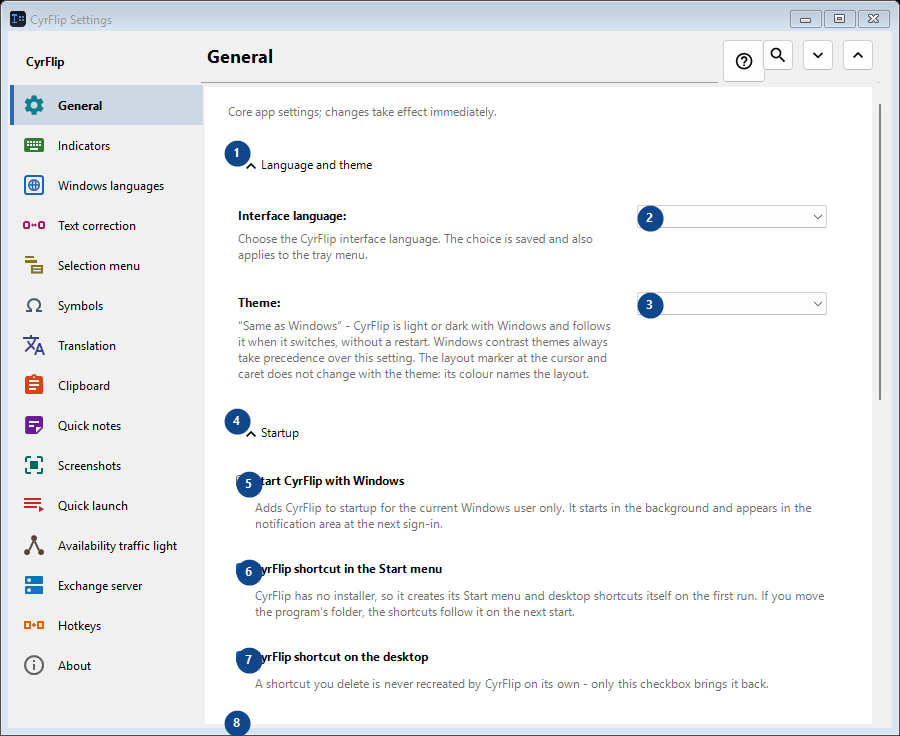
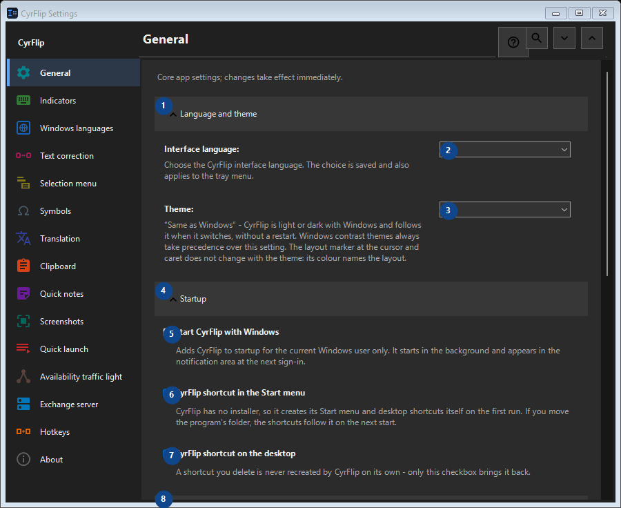

General
What this is for
Core app settings; changes take effect immediately.


In this order
Settings apply immediately. There is no required order; use the groups below.
The elements
1. Language and theme
Use this command when you need the action named above. Review any confirmation before accepting it.
Your shortcuts2. Interface language
Choose or enter the value for the adjacent label. Review it before continuing.
Your shortcuts3. Theme
Choose or enter the value for the adjacent label. Review it before continuing.
Your shortcuts4. Startup
Use this command when you need the action named above. Review any confirmation before accepting it.
Your shortcuts5. Start CyrFlip with Windows
Adds CyrFlip to startup for the current Windows user only. It starts in the background and appears in the notification area at the next sign-in.
Your shortcuts6. CyrFlip shortcut in the Start menu
CyrFlip has no installer, so it creates its Start menu and desktop shortcuts itself on the first run. If you move the program's folder, the shortcuts follow it on the next start.
Your shortcuts7. CyrFlip shortcut on the desktop
A shortcut you delete is never recreated by CyrFlip on its own - only this checkbox brings it back.
Your shortcuts8. Power and screen
Use this command when you need the action named above. Review any confirmation before accepting it.
Your shortcuts9. Keep the computer awake
While on, Windows will not sleep or hibernate on idle — handy for long downloads, copies or renders. The state is saved: a switch left on keeps the computer awake after a restart too - CyrFlip will not watch your battery for you.
Your shortcuts10. Keep the screen on (like video)
The screen does not turn off or lock on idle, just like while watching a video. It does not override a password lock (Win+L or a security policy). The state is saved: a switch left on keeps the screen alive after a restart too.
Your shortcuts11. Settings transfer
Use this command when you need the action named above. Review any confirmation before accepting it.
Your shortcuts12. Export settings...
Use this command when you need the action named above. Review any confirmation before accepting it.
Your shortcuts13. Import settings...
Use this command when you need the action named above. Review any confirmation before accepting it.
Your shortcuts14. Restore settings before import...
Nothing to restore yet: CyrFlip saves the original state just before the first change. This control is currently unavailable. Enable its feature or select an entry first.
Your shortcuts15. Keep a settings backup in Documents
While on, CyrFlip keeps a rolling backup of every setting in Documents\CyrFlip\Backups - the three newest are kept. The backup survives a Microsoft Store reinstall: a fresh install finds it and offers to restore. The file carries your hosts, sites and scenarios - keep it private.
Your shortcuts16. Open backups folder
The backups are plain settings files named by date. Open the folder to copy one or to take it to another computer.
Your shortcuts